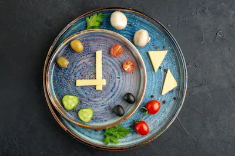

Comer después de las 8 PM engorda*: ¿Mito o realidad científica?
El Ritmo Circadiano y la Digestión Nocturna
El cuerpo humano opera bajo un reloj biológico conocido como ritmo circadiano, que regula funciones como el sueño, la producción hormonal y el metabolismo. Durante la noche, procesos digestivos como la motilidad intestinal y la secreción de enzimas se ralentizan, lo que ha llevado a creer que comer tarde dificulta la digestión y promueve el almacenamiento de grasa. Sin embargo, estudios recientes demuestran que el metabolismo no se "apaga" por completo durante la noche, sino que se adapta. Por ejemplo, un estudio publicado en The American Journal of Clinical Nutrition encontró que la termogénesis (quema de calorías al digerir alimentos) es similar durante el día y la noche cuando se controlan las calorías totales.
No obstante, comer tarde puede afectar indirectamente el peso al alterar patrones de sueño o elevar la ingesta calórica. Personas que cenan muy tarde suelen elegir alimentos hiperpalatables (ultraprocesados) o consumir porciones más grandes debido al hambre acumulada. Esto crea la ilusión de que el horario es el culpable, cuando en realidad es el exceso de calorías. La clave está en diferenciar entre la calidad/cantidad de lo que se come y el momento en que se consume.
Calorías Totales vs. Horario: Qué Dice la Ciencia
La creencia de que "comer después de las 8 PM engorda" se basa en observaciones epidemiológicas, no en causalidad. Estudios controlados muestran que, cuando las calorías y macronutrientes son idénticos, el momento de la comida no afecta significativamente la ganancia o pérdida de grasa. Un meta-análisis de 2021 en Nutrition Reviews analizó 11 estudios y concluyó que, aunque comer tarde puede asociarse con mayor IMC en algunas poblaciones, esto se debe a hábitos colaterales (como picoteo nocturno o menor actividad física), no al metabolismo.
Sin embargo, hay excepciones. Personas con condiciones específicas (como resistencia a la insulina o síndrome metabólico) pueden beneficiarse de restringir el horario de comidas (ej. ayuno intermitente) para mejorar la sensibilidad a la insulina. Pero incluso en estos casos, el efecto principal proviene de reducir la ventana de alimentación, no necesariamente de evitar comer después de cierta hora. Para la mayoría, priorizar una cena equilibrada (proteína, fibra y grasas saludables) es más importante que la hora en el reloj.
Factores que Realmente Importan
Más allá del horario, estos factores determinan si una cena tardía afecta tu peso:
- Composición de la comida: Una cena rica en proteínas y fibra (como salmón con verduras) tiene efectos metabólicos muy distintos a una pizza o helado.
- Rutina de sueño: Dormir mal aumenta el cortisol y el ghrelin (hormona del hambre), lo que puede llevar a comer en exceso al día siguiente.
- Actividad física: Quienes entrenan por la noche suelen necesitar reponer nutrientes tarde, sin que esto implique ganancia de grasa.
En resumen, el cuerpo no convierte mágicamente las calorías en grasa después de cierta hora. El equilibrio energético a lo largo del día es el verdadero determinante.
Recomendaciones Prácticas
Si comes tarde regularmente:
- Prioriza proteínas y vegetales en la cena para promover saciedad y reparación muscular.
- Evita alimentos ultraprocesados, que son fáciles de consumir en exceso.
- Mantén un déficit calórico si buscas perder peso, independientemente del horario.
- Considera ayuno intermitente si notas que reducir la ventana de alimentación mejora tu digestión o energía.